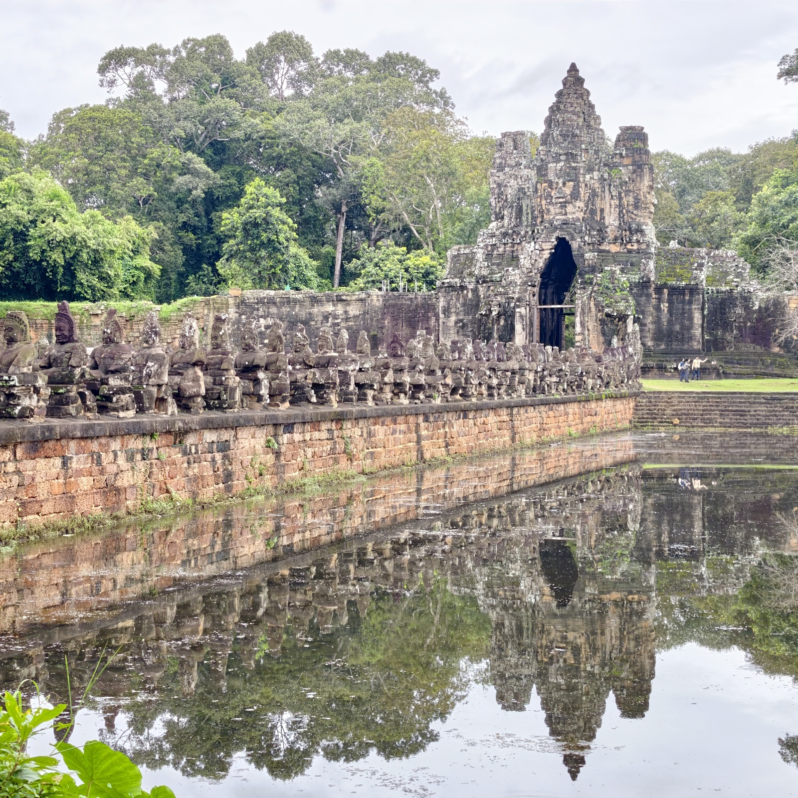
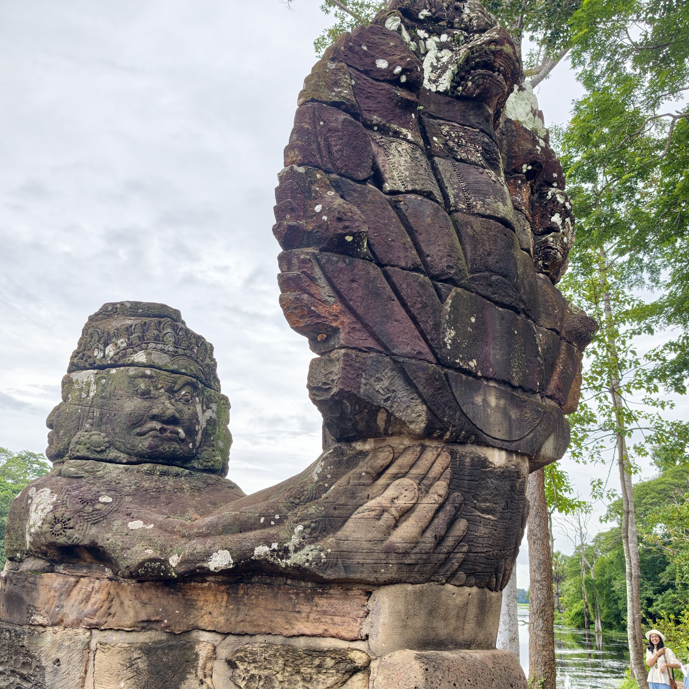
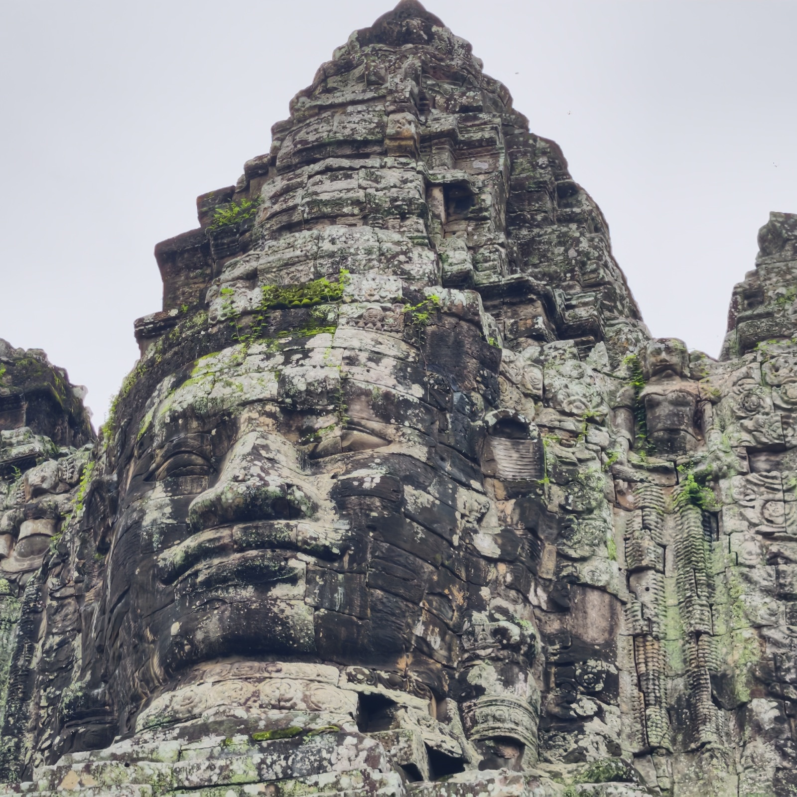
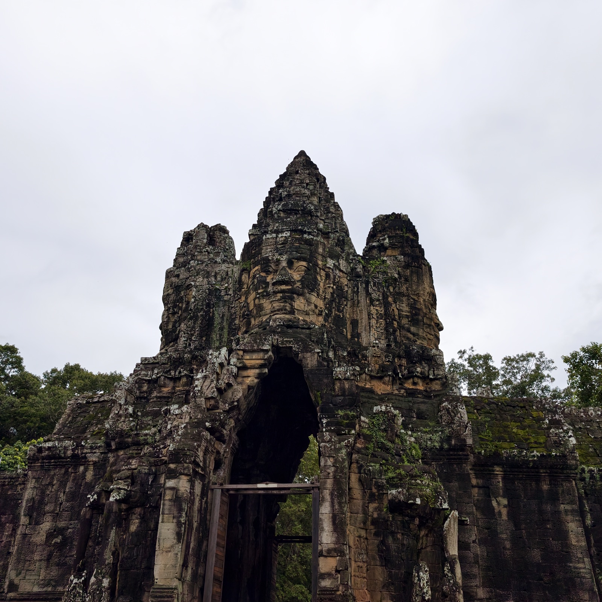
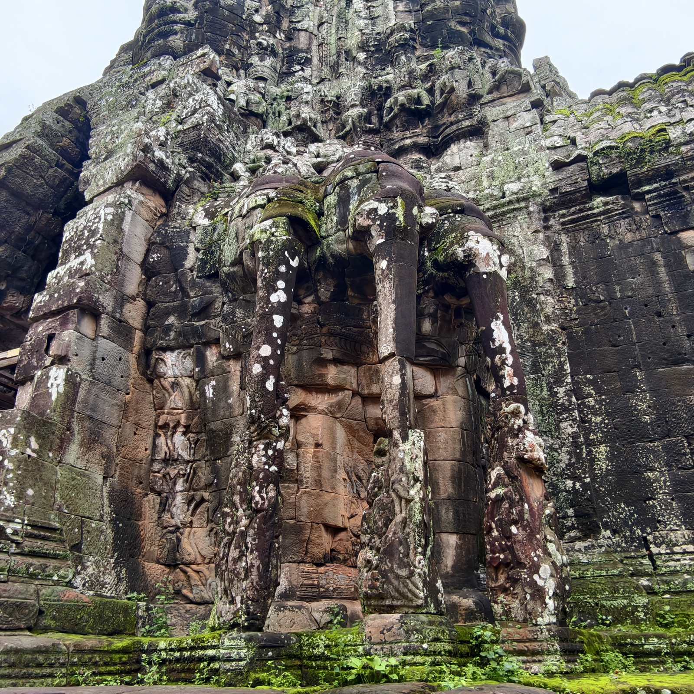
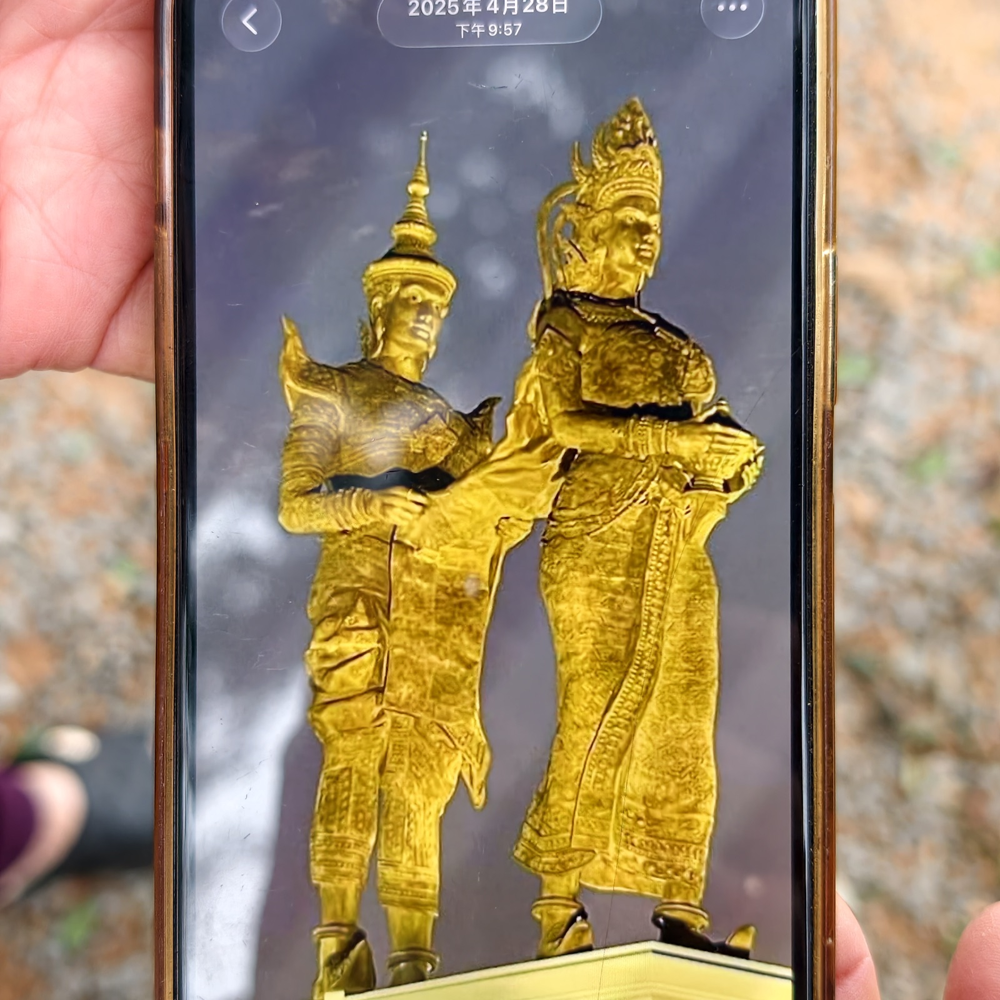

南门
南门是通王城保存得最好的一座城门。还没进城，先在城外护城河的石桥上停下来——这座桥本身就是一件完整的作品。

桥的两侧栏杆是整排的石像：一侧五十四尊善神，一侧五十四尊阿修罗，两军合力抱住那伽巨蛇的身体，向相反的方向拉——这是印度教神话里的「乳海搅拌」，善神与阿修罗拔河一般搅动乳海，以求长生不老的甘露。整条神话，被原样搬上了桥面。
仔细看会发现，不少神像的头不见了——动荡的年代里，许多头像被盗走流散。南门算是几座城门里相对完好的一个。还能看到一些头像的石色比身躯浅一截：那是后世修复时补上去的。修复者有意选了不同色泽的石材，让后来的人一眼就能分辨哪里是原件、哪里是补件，免得将来的研究把新补的石头当成古物。

队列最前面的一尊最气派：多头多手，法力最高强，双臂稳稳扶住那伽高高昂起的蛇身。凑近看，蛇鳞的凿痕和手掌的纹路都还清楚。


走过桥就是城门本身。门楼上方雕着巨大的多面佛脸，通常被认为是观世音菩萨。南门与巴戎寺一样建于阇耶跋摩七世年间，这些面容也被认为同时刻着国王自己的样子——佛即是王，王即是佛，这正是巴戎寺风格最标志的做法。佛脸之下，门洞至今仍在通行。

城门两侧的壁面上，是因陀罗骑着三头象的雕刻。三条象鼻垂落下来，像几根撑住墙体的柱子；因陀罗左右两侧侍立的，是他的两位妻子。

临走前，导游陈老师拿出手机，翻出一张她在西港拍下的金身雕塑给我们看，顺势讲起了「金宝地」这个名字的来历——那是一段高棉人的创世传说。
很久以前，古印度有一位王子漂洋过海，来到中南半岛的海岸。一天，他遇见了海龙王的女儿——这位公主其实是蛇神那伽一族。起初公主袭击了他的船，王子用神箭将她制服，公主反而对他心生爱慕。海龙王被这段缘分打动，应允了婚事，并施展神力把茫茫海水喝干，让海底露出一片肥沃的陆地，作为送给女婿的封地。王子与龙女就在这片新土地上结合、繁衍，他们的后人建立了国家，成为高棉王族的祖先。
所以柬埔寨民间至今有一种说法：他们的国土，是海龙王喝干海水之后露出来的，「金宝地」由此得名。高棉人也自称「龙蛇之后」，自认身上流着海龙王一族的血脉。陈老师自己是柬埔寨人，讲到这儿很是自豪；她特意跟我们强调，那伽在柬埔寨人心里更多是龙，不只是蛇。她还说，正因为是公主「娶」了王子、王子留在龙女的土地上，高棉人的传统婚俗至今是男方入赘——这个一千多年前的故事，至今还在照着柬埔寨人的日子过。